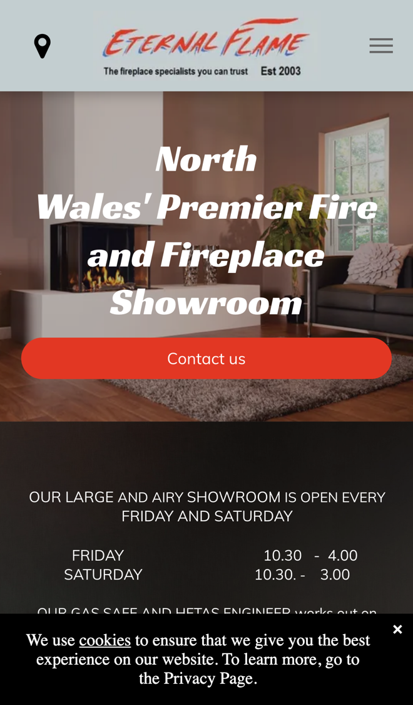

Eternal Flame: from first look to fitted fire, faster
I went through your website on a phone, the way someone choosing a new fire would, and read your homepage, your Fires & Fireplaces page, the gallery and your contact page. It shows off the showroom well and makes it easy to ring you. Where I think you'd win more work, and save time on the phone, is in how people book a survey or a service.
What's already working
Three things I'd change
Let people book a survey online
Your homepage asks people to phone, Monday to Saturday, to "request a gas fire service or survey". The form on each page takes a name, email, phone and message, with no way to pick a day. Your engineer "works out on site" Sunday to Thursday.

People often look at fires in the evening or at the weekend, when nobody can pick up. If they can't book there and then, some will try the next firm.
- On your website they choose a survey or a gas fire service and see the days your engineer has free.
- They pick a slot, add their address and a note, and get a confirmation and a reminder the day before.
- It goes straight into your engineer's diary, so nobody has to ring round to fix a time.
Let customers send photos for a quote
Your homepage offers "a free comprehensive quote on any of our services" and your gallery says "call us for a free quote". There's no way to send a photo of the room or the fireplace with an enquiry.
A photo of the chimney breast and the space tells you a lot before anyone goes out. You can talk about cost sooner, and the survey visit can go straight to the details.
- The quote form asks gas, electric or multi-fuel, the style they liked in your gallery, and for a few photos of the room.
- They get a reply straight away saying what happens next and when you'll be in touch.
- You see the photos before you ring them, and your quote goes back as a link they can accept.
Remind customers when a service is due
You supply and install every fire with your own "in-house Fitter" and an "In-house Gas Safe and Hetas registered engineer", and you service gas fires. A service gets booked when the customer remembers to ring.
Every fire you've fitted is a customer who already trusts you. A reminder at the right time brings the service work back to you, not to whoever they find first.
- Each fit and service is saved with the customer's details and the date.
- When the next service is due, on the timing you choose, they get a text with a link to pick a day.
- Booked services drop into the engineer's diary, and you can see who hasn't booked yet.
Your website, answering for you
An assistant that answers the questions you get asked again and again, at any hour. These answers come only from your own website: your homepage, your Fires & Fireplaces page and your showroom details.
Anything it can't answer, it passes to you with the customer's details.
What happens next
For five local businesses I'm setting up one of these for free, in return for an honest review. Pick whichever would help most.
I'm Tom Williams and I run Tomoni-AI. If a 20-minute chat would help, reply to my email or give me a ring.
Call 07971 512158Email Tom